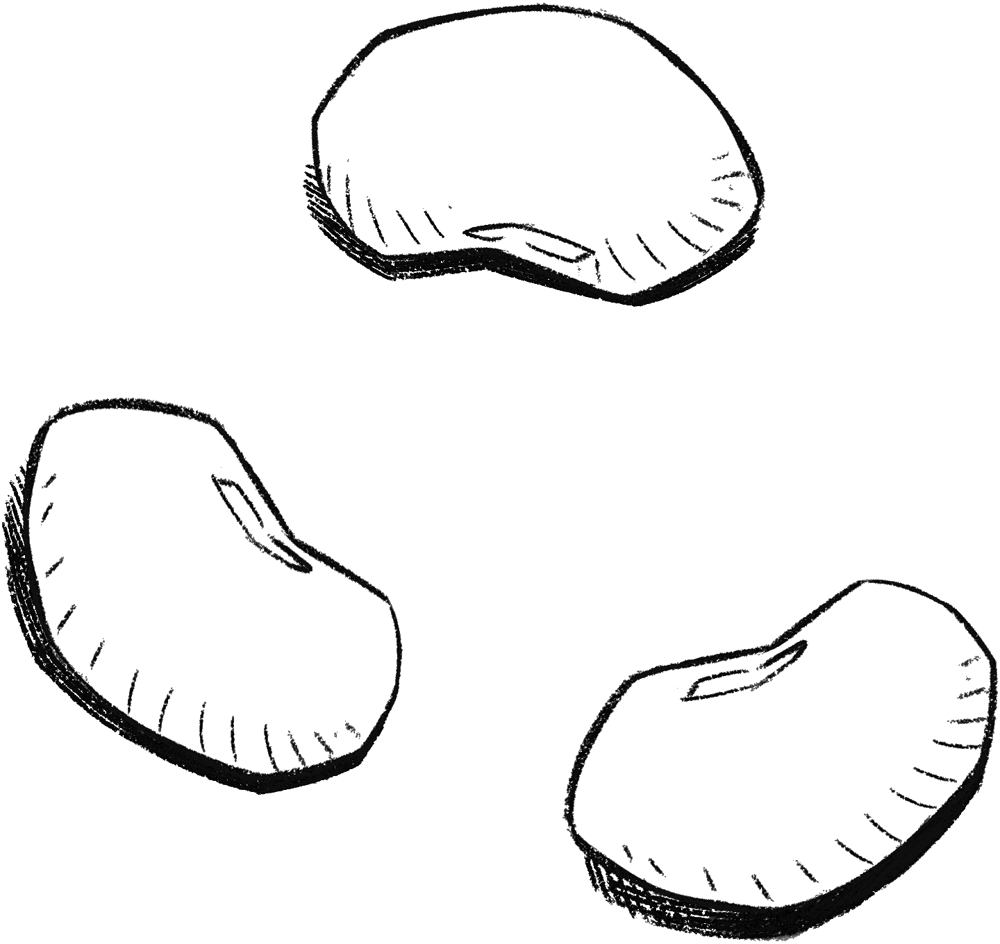
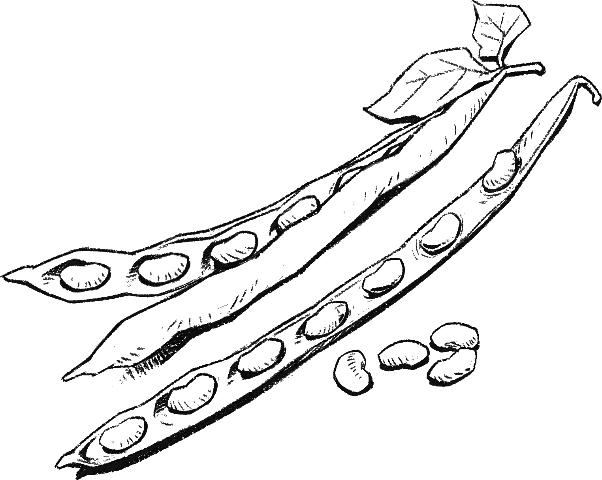
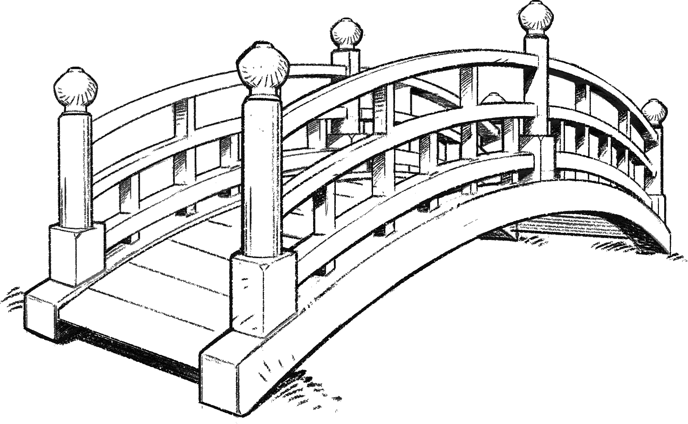
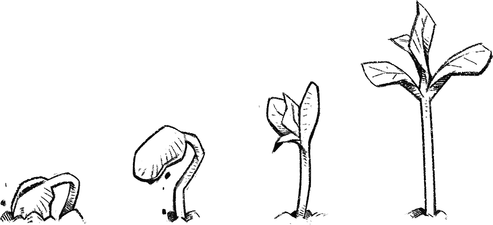

VISION & VALUE //
We are the skaters of the internet.
We’re skating between the blurred lines of the physical and digital worlds as they are beginning to blend. We are a community of individuals who aren’t afraid to push the boundaries, challenge the status quo, and communicate boldly.We’re making an impact on web3 culture.
Our vision is to create the largest decentralized brand for the metaverse that is built and owned by the community.
Values:
Community first:
Everything starts and ends with the community. The moment we prioritize something other than the community will be the beginning of the end. We won't let that happen, because we'll always have community as the #1 value of Azuki.
Dope sh*t only:
Azuki is creative, brave, relentless. It's easy to follow trends and improve incrementally. It's harder to be original and do dope sh*t. We pave our own path.
Trust the process:
Good things take time. Decentralized movements can't turn corners as quickly as centralized movements, and that's both a blessing and a curse. Decentralized doesn't mean there can't be leaders. The core team will provide guard rails and resources for all beans to grow together, but it won't happen overnight. !ttp

COMMUNITY //
Full-time moderation team COMPLETE
Mods help protect and grow our community, the most valuable part of Azuki. We've recently brought on a group of paid full-time and part-time mods. In an effort to professionalize community management in the NFT space, Azuki mods have daily calls within the Community and Product teams, work set hours, take regular breaks, and spend time off-screen.
Azuki Grants IN PROGRESS
Calling all builders, artists, and creatives. The Garden is full of talented human beans that want to use their skills and passion for Azuki to create additive things for the community. Azuki will empower and provide grants to excellent members with great ideas through a grants program. We are working through the legal framework and application process.
Community Spaces IN PROGRESS
From casual hangouts to heartfelt stories, we have seen community-run spaces sprout all over Twitter. These forums are important places to grow the connective tissue of our community. See you at the next Red Bean Soup, or any of the other great spaces that are hosted by Azuki holders.

METAVERSE //
Where is the metaverse today and where is it going?
The metaverse today is where we currently spend most of our time: Discord + Twitter. How do we amplify this experience for Azuki members? How do we distribute the brand to places that have the most attention today? More importantly, where will the metaverse be one year+ from now?
Gallery COMPLETE
Sorting, filtering, and simping are all supported.Community Spaces
Game EXPLORING
Many will try to create one, but few teams have the experience and background to build a genuninely great game with mass market appeal and scalability. Though the core team has the experience, it's a huge endeavor nonetheless. If we do it, we'll do it right.
Bobu Fractionalization IN PROGRESS
Azuki #40 (Bobu) will be fractionalized using fractional.art into ERC-1155 tokens. These tokens will be used for governance over Bobu. Full details here: www.azuki.com/bobu-101
PHYSICAL WORLD //
Streetwear IN PROGRESS
Members of The Garden can expect exclusive drops in perpetuity. First drop coming very soon.
Collectibles IN PROGRESS
Design phase has commenced...
Expanding Core Team IN PROGRESS
We just brought on steamboy, Daph, Demna, and njoo as full-time members. Our careers page will be live soon with additional open roles.
IRL Events EXPLORING
Meet-ups, exhibits, music festivals, and more give us the opportunity to expand our reach beyond a purely digital experience.
BRIDGE BETWEEN //
The bridge between the physical and digital world presents a playground to create a new type of media. Here we will experiment with meta-games, interactive experiences, and unique ways to grow an IP. Riot Games has created an interesting playbook of expanding their IP through a show like Arcane. By allowing ownership in the characters themselves, Azuki along with the community is positioned to expand beyond this playbook.
Custom Verification Bot COMPLETE
Third party bots (e.g. Collabland) have limited features. Our custom bot allows us to own the end to end experience with more security.
Meta-games IN PROGRESS
Micro-actions and games played within the community in order to unlock new experiences.

SEEDLINGS //
An idea starts as a seed. And together we can cultivate the seedlings which will be most impactful.
Partnerships IN PROGRESS
We’ve locked in partnerships already which will soon be announced. And we’re always looking to collaborate with other brands who align with our vision and aesthetics.
$BEANEXPLORING
A token that could be used in the Azuki-verse.Before commiting we need to explore sustainable token economics and have extensive conversations with our lawyers to ensure legal compliance and feasibility.
DAO EXPLORING
Experimentation with DAOs is one of the most exciting areas of crypto today. We must start small and explore various governance structures, reiterating on areas that need improvement, before moving onto bigger experiments. The regulatory framework for DAOs is also something that needs more research. A good resource: A Legal Framework for DAOs
